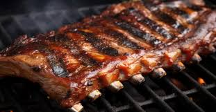

COSTILLA
Acompañando a la costilla, tenemos el imponente lomo ancho. Este corte, conocido por su perfecto marmoleo, es un verdadero deleite para los amantes de la carne. Cuando se cocina a la parrilla, el lomo ancho adquiere una corteza dorada y crujiente que encierra un corazón tierno y jugoso. Cada bocado es un equilibrio perfecto entre sabor y textura, con un toque de sal que realza su esencia natural. El lomo ancho es la elección ideal para quienes buscan disfrutar de un corte de calidad superior que les haga sentir verdaderamente especiales.
LOMO

lomo ancho. Este corte, conocido por su perfecto marmoleo, es un verdadero deleite para los amantes de la carne. Cuando se cocina a la parrilla, el lomo ancho adquiere una corteza dorada y crujiente que encierra un corazón tierno y jugoso. Cada bocado es un equilibrio perfecto entre sabor y textura, con un toque de sal que realza su esencia natural. El lomo ancho es la elección ideal para quienes buscan disfrutar de un corte de calidad superior que les haga sentir verdaderamente especiales.
LOMO DE AGUJA

Pero eso no es todo. El lomo aguja entra en escena como la sorpresa perfecta que complementa esta obra maestra. Con un sabor robusto y un perfil aromático, este corte es ideal para quienes buscan una carne con carácter. Su textura ligeramente más firme ofrece una experiencia masticable que combina a la perfección con nuestras salsas caseras, ya sea una chimichurri fresca o una salsa de ají picante que despierta tus sentidos. Cada bocado del lomo aguja es un recordatorio de la riqueza que la parrilla puede ofrecer.